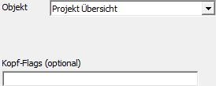
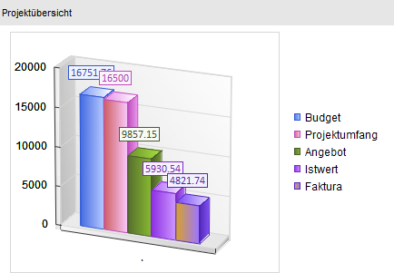

Bei dem Objekt "Projekt Übersicht" wird eine Grafik des ausgewählten Projektes mit allen Budget- und Istwerten dargestellt. Als Key dient die "Projektnummer" (d.h. Feld "Text" oder Bereich "View / Var" muss gefüllt sein).

Ø Kopf-Flags (optional)
Bei diesem Objekt werden keine Kopf-Flags unterstützt.
Beispiel - Externes Objekt mit dem Typ "Objekt" - Objekt "Projekt Übersicht"
